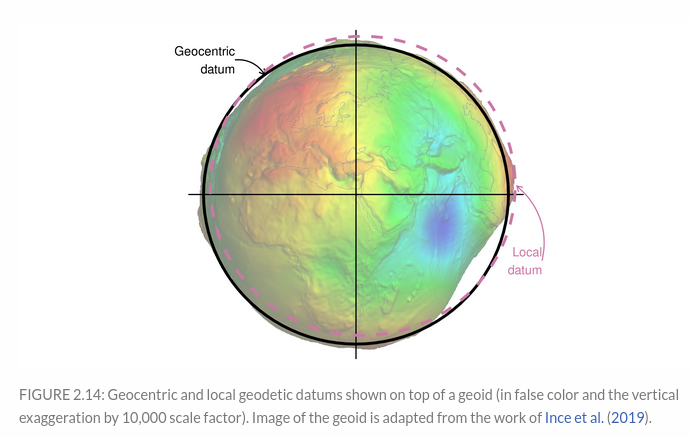
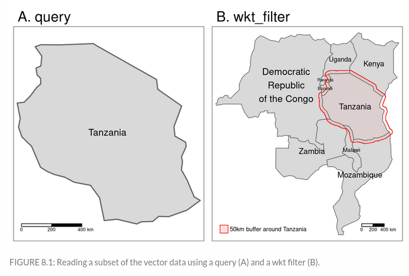
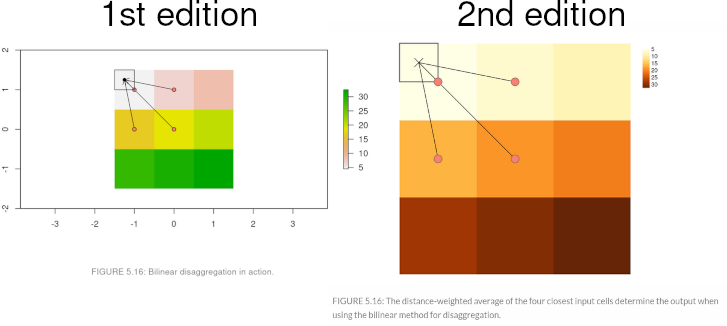

Progress update: Geocomputation with R Second Edition Part 1
Geocomputation with R is a book on geographic data analysis, visualization, and modeling. The First Edition was first published as a physical book in 2019 and we have reached 500k people through via the website at https://geocompr.robinlovelace.net/ and the physical book since then.
The book has also become a key part of many university courses, lectures, and has been endorsed by many people who have found it vital for their work and for learning new geographic skills, as outlined in our guestbook at geocompr.github.io/guestbook/. Tools and methods for geographic data analysis are evolving quickly, especially in the R-Spatial ecosystem. Because of these changes, and demand from our readers and the wider community, we decided in September 2021 to start working on the second edition of the book. The second edition (work in progress) is available at https://geocompr.robinlovelace.net/, while you can find the first edition at https://bookdown.org/robinlovelace/geocompr/.
At the time of writing (January 2022), we have already made many changes to first part of the book called Foundations. In this post we list and explain the changes.
Major changes
Several major changes have happened to #rspatial since the release of the first version of the book. Most importantly:1
- PROJ library was refactored mainly, which have had an impact on a plethora of GIS software, including R spatial packages
- The raster package, highlighted in the 1st edition, is now being replaced by its successor terra

Both of these changes are now addressed in Geocomputation with R. Chapter “Reprojecting geographic data” has undergone numerous modifications, including an explanation of the currently recommended WKT coordinate reference systems representation, information on how to get and set CRSs, or a much-improved section on creating custom projections. Similarly, we already replaced raster’s descriptions and functions with terra in the book’s first eight chapters.
Changes to specific chapters
Additionally, almost all chapters received significant edits. Section The history of R-spatial in 1st chapter was updated with summary of various new #rspatial developments, including terra, stars, lidR, rayshader, ggspatial, mapsf, etc. We also used this section to highlight that packages rgdal, rgeos, and maptools will be retired at the end of 2023 and that anyone still using these packages should “transition to sf/stars/terra functions using GDAL and PROJ at your earliest convenience”.”
Second chapter got an information about s2, an interface to spherical geometry library already used by the sf package, and a comparison between terra and stars.
In Chapter 4, we added improved communication of binary spatial predicates in Chapter 4 and a new section on the dimensionally extended 9 intersection model (DE-9IM).

The vector part of Chapter 5 received a new section on the links between subsetting and clipping, while the raster part got a much improved part on resampling methods. We also decided to split out the text related raster-vector interactions into a new 6th chapter.
Finally, Chapter 8 got a bunch of improvements, including mentions of more data packages, alternative ways of reading-in OSM data, a part about geocoding, and information about Cloud Optimized GeoTIFF (COG). We also spent some time to show how to read just a part of vector data file using OGR SQL queries and WKT filters, and extract only a portion of a COG raster file.

Book infrastructure
We also decided that the 2nd edition is a good time to improve the book infrastructure, i.e., data packages, storage of the exercises and solutions, automatic book builds, etc.
The most visible change is the visual theme of the book website. Now it uses the Bootstrap 4 framework through the bookdown::bs4_book theme with slightly customized elements, such as font families or a text blocks style.
Next, we created an external bookdown-based website for solutions of the Geocomputation with R exercises. You can find its early version at https://geocompr.github.io/solutions/, and we plan to describe it in more detail in a future blog post.
The book still uses two external packages, spData and spDataLarge, to store example datasets. However, we made an important change here – we saved some R spatial objects to files (e.g., raster objects to GeoTIFF) – this way, we can read data using raster/terra/stars, instead of just loading one package’s class object into R memory.
We refactored build settings, so the book builds on Docker images in the geocompr/docker repo, and improved the experience of using the book in Binder (ideal for trying out the code before installing or updating the necessary R packages), as documented in issue #691 (thanks to yuvipanda).
Minor changes
We reworked several plots using the tmap package to improve the visual consistency of the book.

The book also received (almost) countless minor changes, including rephrasing many concepts and reordering of our prose to make some ideas easier to understand.
Outro
Our plan now is to switch attention to the second part of the book called Extensions, while Part 1 is sent for peer review. We will work on the enhanced Making maps chapter, updates on Bridges to GIS software and Statistical learning.
The work and updates on the second edition of Geocomputation with R would not be possible without the interest and activity of our readers! We want to thank all of you, including authors of recent Pull Requests (ec-nebi, e-clin, Oliver Leroy defuneste, Ivan Dubrovin iod-ine, Floris Vanderhaeghe florisvdh, Hasmukh K Mistry hasukmistry, John S. Erickson olyerickson) and people raising new GitHub issues. We are still actively working on the book, and thus – let us know if you have any issues or suggestions and feel free to create any Pull Request from fixing typos, clarifying unclear sentences, to changes to the code and prose. You can also contact us on the Geocomputation with R discord channel.
Footnotes
There are also other significant changes, such as the retirement of RQGIS and mlr, but we plan to focus on them while updating the second part of the book.↩︎
Reuse
Citation
@online{nowosad,_robin_lovelace,_jannes_muenchow2022,
author = {Nowosad, Robin Lovelace, Jannes Muenchow, Jakub},
title = {Progress Update: {Geocomputation} with {R} {Second} {Edition}
{Part} 1},
date = {2022-01-27},
url = {https://geocompx.org/post/2022/geocompr2-bp2/},
langid = {en}
}